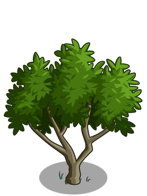
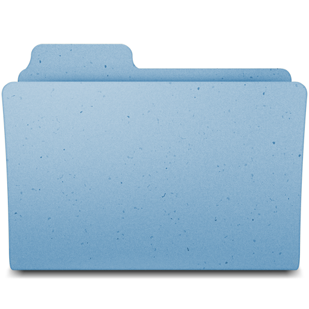
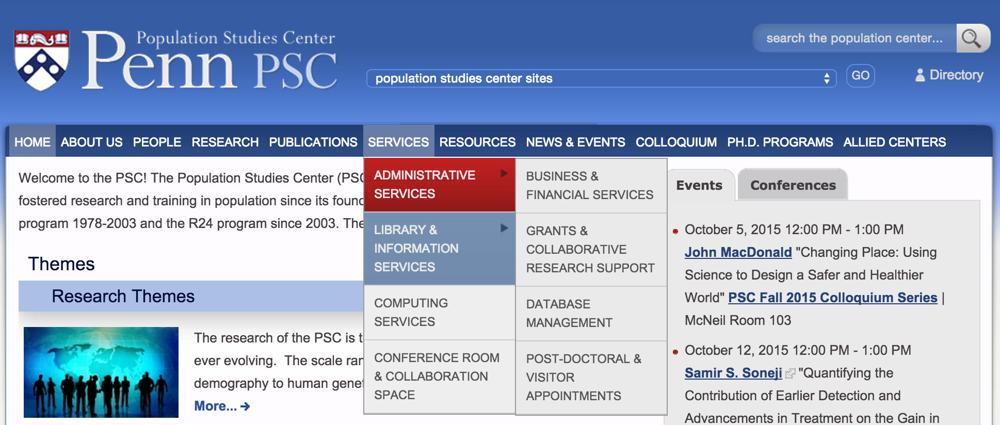

Perfecting Menus, Paths and Breadcrumbs
about
about/jody
Jody Hamilton
CTO of Zivtech
Drupal architect, developer, site builder, trainer and contributor
Jody Lynn @ drupal.org
@JodyHamilton
about/definitions
Definitions
menus
A Menu is a Tree
One site : One tree
One page : One position


menus/the-main-menu
The Menu Tree vs Menu Displays
Common Menu Displays
- Main Menu
- Footer Menu
- User Menu
- Organic Groups Menus
menus/canonical-menu-positions
Canonical Menu Positions & Core Problems
One page, one path, one breadcrumb, multiple menu items?
Canonical: We can have more than one but one is special
https://www.drupal.org/node/1875824
menus/menu-block
Menu Block
The only menu display you need
menus/hall-of-shame
Menu Hall of Shame
- Hand-made menus
- Crowded menus
- Too many menus

menus/menu-contrib
Menu Contrib
paths
A path is an address
URLs are part of your
- UI
- Design (though missing from most mockups)
- Navigation
- Self-respect
paths/restful
A path should be RESTful
"Clean" & Human-readable is not enough
- stateless
- hackable
- unique
For stateless paths, remember a page <> a node
paths/canonical-paths
Canonical Paths
Drupal 8 has working canonical paths!
https://www.drupal.org/node/1160764
Paths are also more stateless in D8
paths/pathauto
Pathauto Mastery
- Pages: [node:menu-link:parent:url:path]/[node:title]
- Event: events/[node:title]
- Bio: people/[node:title]
Change pathauto updating settings on launch
paths/path-contrib
Path Contrib Modules
- Global Redirect
- Redirect
- Linkit
- Pathologic
paths/paths-hall-of-shame
Paths Hall of Shame
- Javascript-only links
- Separate mobile sites
- Unhackable paths
breadcrumbs
Breadcrumbs
A human-readable path
"the children find that birds have eaten the crumbs and they are lost in the woods"
breadcrumbs/drupal-7
Breadcrumbs in Drupal 7
Based on menu positions. But menu positions have no system canonicalness.
Many contrib modules to help:
- Custom breadcrumbs
- Menu position
- Menu breadcrumb
- Crumbs
- Hansel breadcrumbs
- Path Breadcrumbs
Breadcrumbs by Path
Use Breadcrumbs by Path or Menu Trail by Path
breadcrumbs/drupal-8
Breadcrumbs in Drupal 8
http://www.palantir.net/blog/d8ftw-breadcrumbs-work
path-based!
about/bear
Bear Install Profile
Questions
about/questions
/